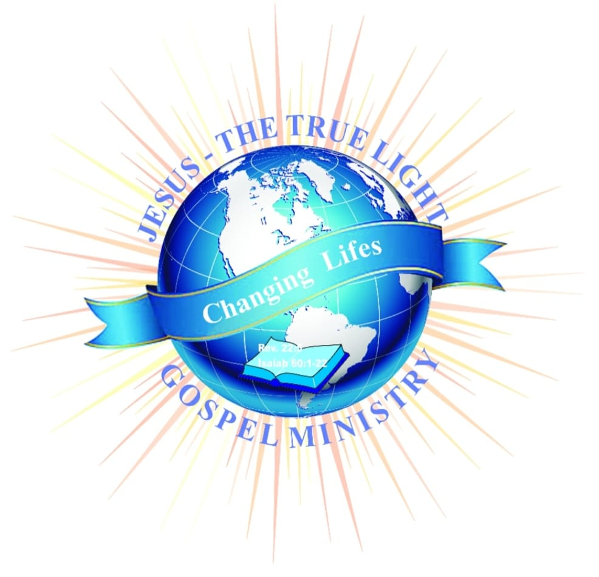

Spirit-filled worship
Music that lifts the room and makes space to meet God. Come to sing, or just to sit and breathe.

The True Light
Changing Lives
Jesus — the True Light of every nation.
A spirit-filled, revival and restoration church — multiracial, multilingual, and united. We preach the Word with power and walk with people until lives are changed.
Rev. 22 · Isaiah 60:1–22
Welcome home
A spirit-filled, revival and restoration church — multiracial, multilingual, and united. We preach the Word with power and walk with people until lives are changed.
Under the leadership of Pastor Waone Aldon Pelesi, Jesus-The True Light Gospel Ministries exists to see lives filled with hope — in Kagung Village, Kuruman and across the community. Come as you are. Leave encouraged and sent.
01 — Vision
We see our church as the dynamic spirit-filled, revival and restoration church. A modern multiracial and multilingual church which is spiritually healthy and united nation of God, ready for the second coming of our Lord and Saviour Jesus Christ.
A church that impacts our communities, nations and the whole universe through living and serving the Word of God as the standard for healthy and balanced life before our saviour God.
The dynamic spirit-filled, revival and restoration church.
Multiracial and multilingual, spiritually healthy and united, ready for the Lord's return.
Living and serving the Word of God as the standard for a healthy, balanced life.
02 — Mission
Restoring the image and glory of God unto all human beings in all the ends of earth through preaching and ministering the word of God with power.
Empowering people with skills, knowledge and changed attitude towards life. Improving social-interaction and building healthy relationships.
Enriching the community in all aspects of life by targeting to have spiritually and emotionally competent independent individuals.
To establish children and youth ministries for social-interaction, healthy relationships teachings and true worship of the Lord, and to provide spiritual and physical fitness and other necessities for unprivileged communities.
What to expect
No pressure, no performance — just a family who will make you feel at home.
Music that lifts the room and makes space to meet God. Come to sing, or just to sit and breathe.
Clear, honest teaching straight from Scripture — for real life, real questions, real Mondays.
We pray for one another and we expect God to move. Bring what's heavy — you won't carry it alone.
Isaiah 60:1
“Arise, shine; for thy light is come, and the glory of the LORD is risen upon thee.”
Rev. 22 · Isaiah 60:1–22
Life at The True Light


Times & place
◆
S23/415 Vryburg Stop, Kagung Village, Kuruman, 8446.
Tap the map for directions — we'll be watching for you.
03 — Ministries
Four pillars carry the work of the ministry — each one an invitation into the family of God.
Preaching and ministering the Word of God with power — Sunday services, prayer nights and revival gatherings.
Ministries built for social interaction, healthy relationships and true worship — raising a generation that knows the Lord.
Skills, knowledge and a renewed attitude toward life — equipping spiritually and emotionally competent, independent people.
Enriching the community and providing spiritual and physical necessities to the unprivileged among us.
This Sunday
Your questions, your doubts, your family, your hope. There's room in this light for all of it — and for you.
Give
Every gift keeps the doors open and the outreach moving. Thank you for sowing into what God is doing in Kagung Village, Kuruman.